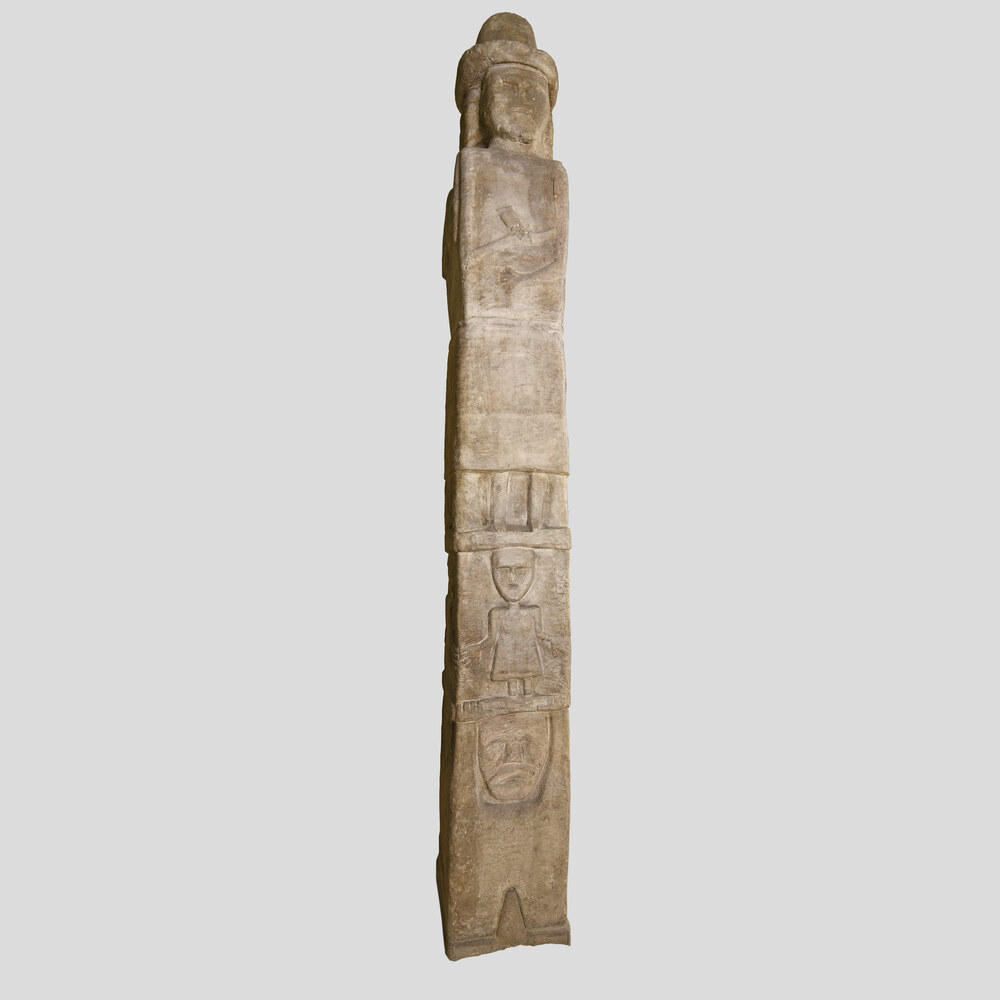

História das religiões · Europa eslava · Fontes medievais · Arqueologia
Paganismo Eslavo
Tradições, deuses, cristianização e reconstrução de uma religião fragmentariamente documentada
Paganismo Eslavo é um termo moderno para diferentes tradições religiosas praticadas por comunidades eslavas antes e durante a cristianização. Não havia uma igreja única, uma doutrina universal ou uma escritura preservada. O que sabemos resulta de fontes fragmentárias e de naturezas muito diferentes. [1]
Não existe uma “religião eslava” perfeitamente uniforme para reconstruir
Fontes orientais, ocidentais e meridionais documentam contextos diferentes. Uma divindade atestada na Rus de Kyiv não deve ser automaticamente projetada sobre todos os povos eslavos, e uma tradição moderna não pode preencher silenciosamente as lacunas das fontes antigas. [1]
Índice
Uma religião conhecida sobretudo por fragmentos
As evidências indicam tradições relacionadas, mas não idênticas, espalhadas por uma vasta área da Europa.
Sem “Bíblia eslava”
Não sobreviveu um cânone pré-cristão produzido pelas próprias comunidades que permita reconstruir uma teologia completa.
Fontes cristãs
Crônicas medievais registram nomes e eventos importantes, mas foram escritas em ambientes cristãos e precisam ser lidas criticamente. [14]
Materialidade religiosa
Arqueologia, inscrições, topônimos, depósitos e estruturas ajudam a confrontar ou limitar interpretações textuais.
Reconstruções modernas
Rodnovery e movimentos relacionados são religiões contemporâneas. Documentam o presente, não funcionam automaticamente como testemunho da Idade Média. [12]
Regra da página: documento → contexto → interpretação → grau de certeza.
Da diversidade local à cristianização e à reconstrução moderna
As datas abaixo são marcos úteis, não fronteiras religiosas rígidas.
Tradições locais
Fontes externas e comparações posteriores sugerem cultos relacionados a divindades, ancestrais, paisagens, fertilidade, proteção e forças naturais, mas a documentação é desigual por região. [1]
Estados e religião
A formação de estruturas políticas mais centralizadas produz documentação mais clara de juramentos, divindades e cultos associados à autoridade.
Transformação dos antigos cultos
Práticas e crenças passam por proibição, adaptação, sobrevivência local e reinterpretação dentro de sociedades progressivamente cristianizadas.
Folclore, erudição e invenção
Estudiosos passam a comparar canções, costumes, linguística e crônicas. Esse processo recupera dados, mas também cria sistemas excessivamente completos a partir de fragmentos.
Rodnovery / Slavic Native Faith
Movimentos contemporâneos reorganizam história, folclore e identidade eslava em novas religiões, com grande diversidade interna entre países e grupos. [12]
O mundo religioso eslavo não cabe em um único país
O diagrama localiza alguns casos documentais citados na página. Ele não representa fronteiras étnicas ou políticas precisas.
Arkona / Rügen
Centro político-religioso dos Rani/Rugiani descrito em fontes medievais; o culto de Sventovit é especialmente bem documentado regionalmente. [7]
Polônia
Fontes arqueológicas, linguísticas e cronísticas testemunham processos próprios de cristianização e posterior reconstrução moderna.
Boêmia
Outro centro importante para compreender formação de Estados, cristianização e transformação de práticas anteriores.
Novgorod
Parte do mundo da Rus medieval, com documentação que deve ser diferenciada de outras regiões eslavas.
Kyiv
O panteão de Vladimir e a conversão da Rus tornaram Kyiv central para a documentação do paganismo eslavo oriental. [2]
Bálcãs eslavos
As tradições eslavas meridionais seguem trajetórias históricas próprias; dados orientais não devem ser projetados automaticamente sobre elas.
Alguns nomes são bem documentados — o sistema completo não é
A lista abaixo prioriza divindades com atestação relevante e mostra quando a segurança é regional ou interpretativa.
Perun
Trovão, poder e guerra aparecem associados a Perun em fontes da Rus. Juramentos e o programa religioso de Vladimir dão a ele documentação especialmente forte no contexto eslavo oriental. [5]
●●●● Forte — sobretudo RusVeles / Volos
Ligado a gado e riqueza em documentação da Rus e citado em tradições de juramento. Sua relação estrutural com Perun é objeto de interpretações comparativas posteriores. [6]
●●●● Forte para existência/cultoMokosh
Única divindade feminina nomeada no conjunto atribuído ao panteão de Vladimir. Funções mais detalhadas são reconstruídas com auxílio de linguística e folclore e exigem cautela. [3]
●●●○ Moderada–forteDazhbog
Nomeado em fontes medievais do leste eslavo. Associações solares e cosmológicas variam conforme texto e interpretação.
●●●○ ModeradaStribog
Também presente no conjunto cronístico de Vladimir. Sua identificação simples como “deus dos ventos” é útil didaticamente, mas resume um problema filológico mais complexo.
●●●○ ModeradaSventovit
Especialmente documentado entre eslavos ocidentais de Rügen, com santuário em Arkona descrito por Saxo Grammaticus. Isso não o torna automaticamente “deus supremo de todos os eslavos”. [7]
●●●● Forte regionalmenteUma pirâmide de fontes — e de limitações
“Fonte antiga” não é sinônimo de “descrição neutra”, e “tradição popular” não é sinônimo de sobrevivência intacta.
Próximos aos acontecimentos
Registram nomes, juramentos, conversões e conflitos. São essenciais para Vladimir, Perun, Veles e Arkona.
Limite: frequentemente escritos por autores cristãos e com objetivos políticos ou religiosos. [14]
Materialidade
Estruturas, sepultamentos, depósitos, esculturas, objetos e paisagens ritualizadas podem aproximar a análise do período estudado.
Limite: um objeto não explica sozinho o nome de um deus ou o significado de um rito.
Nomes e relações
Topônimos e correspondências linguísticas ajudam a testar a distribuição de nomes e reconstruir termos religiosos.
Limite: etimologia não produz, sozinha, uma mitologia completa.
Possíveis continuidades
Canções, festas, personagens e costumes podem conservar camadas antigas.
Limite: séculos de cristianização e transformação impedem presumir continuidade literal. [11]
Há testemunho histórico ou material relevante e contextualizado.
Interpretação sustentada por diferentes indícios, mas sem documentação completa.
Existem leituras acadêmicas concorrentes ou problemas relevantes de fonte.
A hipótese exige inferências maiores que a evidência disponível.
Criação, adaptação ou reconstrução contemporânea; pode ser religiosamente significativa hoje sem ser evidência medieval.

Mais que nomes de deuses
As fontes apontam para ritos e relações sociais, embora detalhes variem entre regiões.
Oferendas e sacrifícios
Fontes textuais e arqueológicas descrevem ofertas de animais, alimentos e objetos em determinados contextos. Não há base para uma liturgia universal eslava.
Festividades
Ciclos agrícolas, banquetes, alianças e calendários locais podiam reunir dimensões sociais e religiosas.
Ancestralidade
Mortos, família e continuidade comunitária aparecem em práticas e folclore, mas o grau de continuidade entre épocas exige análise específica.
Árvores, águas e lugares
Fontes descrevem veneração ou significados rituais ligados a elementos naturais em diferentes contextos eslavos.
Juramentos e autoridade
Perun e Veles aparecem ligados a juramentos e estruturas políticas na documentação da Rus, mostrando como religião e poder podiam se cruzar. [6]
Santuários
Arkona é um exemplo extraordinariamente documentado de centro religioso eslavo ocidental — justamente por isso não deve ser tratado como modelo universal. [7]
Quando os antigos cultos perderam centralidade
A cristianização não aconteceu simultaneamente nem pelos mesmos mecanismos em todas as sociedades eslavas.
Política e diplomacia
Conversões de governantes podiam reorganizar alianças internacionais, legitimidade e instituições estatais. A trajetória de Vladimir é um exemplo importante, mas não universal. [2]
Missão e coerção
Missionação, leis, destruição de imagens e santuários e episódios coercitivos coexistiram com adaptações graduais e negociações locais.
Arkona, 1168
A conquista dinamarquesa do centro de Arkona e a destruição de seu culto de Sventovit são bem documentadas, mas chegam por narrativas de vencedores cristãos. [7]
Não foi um interruptor
Práticas anteriores podiam continuar, mudar de significado ou ser integradas a novos calendários e formas cristãs.
Desapareceu completamente? Não. Permaneceu intacto? Também não.
A pergunta correta não é apenas “sobreviveu?”, mas o que mudou, em qual contexto e através de qual fonte sabemos disso?
Folclore
Pode conservar vocabulário, personagens e práticas, mas não é uma cápsula do tempo pré-cristã.
Calendário
Festividades e costumes podem combinar camadas cristãs e anteriores, impossíveis de separar apenas por aparência.
Memória cultural
Narrativas sobre o passado religioso mudam conforme identidades regionais, nacionais e políticas.
Paganismo antigo × Rodnovery moderno
Slavic Native Faith, Rodnovery e nomes relacionados descrevem movimentos religiosos modernos diversos, particularmente visíveis após o fim dos regimes comunistas na Europa Central e Oriental. [12]
Paganismos eslavos históricos
- tradições locais pré-cristãs;
- fontes incompletas e externas;
- sem doutrina universal conhecida;
- práticas reconstruídas principalmente pela pesquisa histórica.
Rodnovery / Native Faith atual
- movimentos contemporâneos;
- organizações e comunidades atuais;
- uso seletivo de história, arqueologia e folclore;
- teologias e ritos que podem ser sistematizados modernamente.
Identidade e política
A pesquisa contemporânea documenta grande diversidade interna: alguns grupos articulam fortemente nacionalidade, etnicidade e política; outros enfatizam religião, cultura ou comunidade sem programas extremistas. Não é válido generalizar um movimento inteiro a partir de seus segmentos mais politizados. [13] [17]
Quando uma religião fragmentária vira sistema completo na internet
Quanto maior a lacuna documental, maior a necessidade de mostrar de onde veio cada detalhe.
| Afirmação | Avaliação | Por quê? |
|---|---|---|
| “Perun foi uma divindade importante.” | Bem documentado | Crônicas, juramentos e o programa religioso da Rus oferecem documentação relevante. |
| “Todos os eslavos cultuavam exatamente os mesmos deuses.” | Não demonstrado | As fontes mostram fortes diferenças regionais. |
| “Vladimir criou a religião pagã oficial de todos os eslavos.” | Falso | Seu panteão foi um programa político localizado na Rus e de curta duração. |
| “Podemos reconstruir uma cosmologia eslava completa.” | Hipótese | Modelos modernos combinam fontes de séculos e regiões distintas. |
| “Folclore cristão preserva exatamente ritos pré-cristãos.” | Não demonstrado | Folclore sofre transformação contínua. |
| “O Livro de Veles é uma escritura eslava antiga comprovada.” | Não confiável | A obra é tratada na pesquisa sobre Native Faith como alegado manuscrito antigo e caso de mistificação/pseudohistória, não como fonte medieval segura. [16] |
| “Rodnovery é exatamente a religião medieval preservada.” | Falso | É um conjunto de movimentos religiosos modernos de reconstrução e revivalismo. |
O que realmente importa?
Uma página histórica fica melhor quando os nomes de deuses não ocupam o espaço destinado ao método.
Essencial
- diversidade regional;
- tipos de fonte;
- Perun e Veles;
- Vladimir e formação política;
- cristianização;
- Arkona;
- limites das reconstruções.
Complementar
- Mokosh, Dazhbog, Stribog;
- arqueologia;
- rituais;
- folclore;
- linguística comparativa;
- modelos cosmológicos debatidos.
Curiosidades
- símbolos modernos;
- arte neopagã;
- genealogias completas;
- equivalências entre deuses;
- cultura popular.
Por que estudar Paganismo Eslavo?
História
Ajuda a compreender sociedades eslavas antes e durante a formação de Estados cristãos.
Religião
Mostra como tradições podem mudar, desaparecer como sistemas dominantes e ser reinterpretadas.
Cultura
Oferece contexto para folclore, literatura e memória histórica eslava.
Arqueologia
Expõe o desafio de inferir práticas e significados a partir de vestígios materiais.
Linguística
Mostra como nomes e termos podem complementar — mas não substituir — documentação histórica.
Pensamento crítico
Treina a distinção entre documento, hipótese comparativa, sobrevivência folclórica e invenção moderna.
Perguntas frequentes
Paganismo Eslavo era uma religião única?
Não. O termo moderno reúne tradições relacionadas de comunidades eslavas diferentes, documentadas de maneiras muito desiguais.
Quem era o principal deus eslavo?
Não há base para uma divindade suprema universal. Perun teve enorme importância na documentação da Rus, enquanto Sventovit, por exemplo, é especialmente importante em fontes de Rügen.
Existe uma escritura sagrada eslava?
Nenhum cânone pré-cristão confiável sobreviveu. O chamado Livro de Veles não é tratado aqui como fonte medieval autêntica. [16]
Paganismo Eslavo ainda existe?
As religiões medievais não sobreviveram como um sistema institucional contínuo. Existem hoje movimentos de Rodnovery/Slavic Native Faith inspirados e reconstruídos a partir do passado. [12]
Todo folclore eslavo é pagão?
Não. Folclore é historicamente dinâmico e combina séculos de transformações sociais, cristãs e locais.
18 referências para verificar o percurso
As fontes são separadas por tipo. Os filtros abaixo aparecem somente com JavaScript; sem JavaScript, todas permanecem disponíveis.
[1] Cambridge University Press — Russia before Russia
Discussão histórica da Rus anterior à cristianização, incluindo Perun, Veles e as limitações da documentação religiosa.
Consultar fonte[2] Encyclopedia of Ukraine — Volodymyr the Great
Síntese do reinado de Vladimir, instalação do panteão em Kyiv e cristianização da Rus em 988, com bibliografia especializada.
Consultar fonte[3] Encyclopedia of Ukraine — Mythology
Compilação historiográfica sobre Perun, Veles, Mokosh e o panteão atribuído a Vladimir; útil com cautela por refletir debates acadêmicos de diferentes épocas.
Consultar fonte[4] Cambridge — The Steppe in the Emergent Rus’ Polity
Contextualiza a formação política da Rus e o programa religioso de Vladimir dentro das transformações estatais.
Consultar fonte[5] Tolochko — Religious Sites in Kiev During the Reign of Volodimer
Estudo sobre locais religiosos em Kyiv e a importância de Perun e Veles no contexto político-religioso da Rus.
Consultar fonte[6] Cambridge — The Literature of Old Russia, 988–1730
Contextualiza tradições textuais da Rus, inclusive juramentos não cristãos associados a Perun e Veles.
Consultar fonte[7] Cambridge — Religion and War in Saxo Grammaticus’s Gesta Danorum
Analisa a narrativa de Saxo sobre Arkona, reconhecendo sua riqueza descritiva e seu viés dentro de uma narrativa cristã de guerra.
Consultar fonte[8] Cambridge — Denmark and the Baltic / conquista de Arkona
Contextualização histórica da conquista de Arkona em 1168 e da expansão dinamarquesa no Báltico.
Consultar fonte[9] Cambridge — Cultural identity / tradição religiosa da Rus
Síntese acadêmica que discute Perun, Veles e a dificuldade de reconstruir cultura espiritual pré-cristã.
Consultar fonte[10] Museu Arqueológico de Cracóvia / Wikimedia Commons — Ídolo de Zbruch
Fotografia institucional da peça MAK/63. A própria descrição museológica mantém a datação com cautela; a imagem foi liberada ao domínio público.
Consultar fonte[11] Ermacora — tradições populares e método histórico-religioso
Discussão crítica sobre o uso de folclore posterior na reconstrução de mitologia eslava e os riscos metodológicos envolvidos.
Consultar fonte[12] Aitamurto & Simpson (2026) — Slavic Native Faith
Síntese atual da Cambridge sobre Rodnovery/Slavic Native Faith como movimento religioso moderno diverso e transnacional.
Consultar fonte[13] Ivakhiv (2005) — In Search of Deeper Identities
Estudo sobre crescimento do neopaganismo e Native Faith na Ucrânia pós-soviética e suas relações com identidade.
Consultar fonte[14] Cambridge — A New Constantine in the North
Análise da Primary Chronicle como construção literária e litúrgica, lembrando que crônicas não são transcrições neutras de acontecimentos.
Consultar fonte[15] Encyclopedia of Ukraine — cristianização de Volodymyr
Registra a conversão oficial, destruição de imagens pagãs e processo posterior de cristianização, incluindo episódios coercitivos.
Consultar fonte[16] Cambridge (2026) — Book of Veles dentro da Slavic Native Faith
A síntese acadêmica moderna trata o chamado Livro de Veles como alegado manuscrito antigo e discute sua transformação de mistificação em mito identitário contemporâneo.
Consultar fonte[17] Reichenbach (2026) — Paganismo moderno e política na Polônia
Capítulo contemporâneo sobre sacralização do passado pré-cristão e política de identidade no paganismo polonês moderno.
Consultar fonte[18] Wikimedia Commons — Cape Arkona
Fotografia de Andreas Steinhoff, 2004, usada para situar visualmente a área de Arkona/Rügen. Reutilização permitida com atribuição.
Consultar fonte